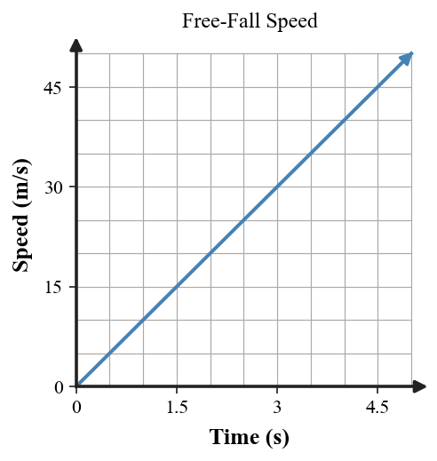
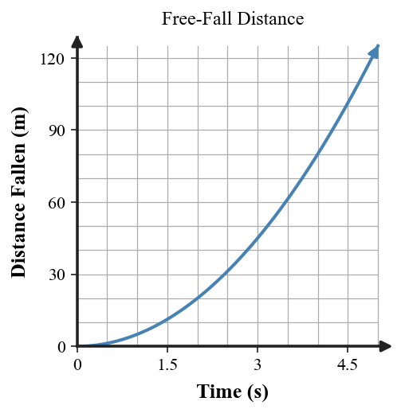

Practice focus: Describe free fall as motion under gravity alone and use the approved free-fall relationships to analyze speed and distance.
Define free fall in terms of the forces acting on an object.
Classify a rock falling in a vacuum as free fall or not free fall.
Classify a parachutist with an open parachute as ideal free fall or not.
Ignoring air resistance, is a ball thrown upward in free fall while it travels upward?
Ignoring air resistance, is the same ball in free fall at the top of its path?
Ignoring air resistance, is the same ball in free fall on the way down?
Near Earth, about how much does free-fall velocity change each second?
State the approximate value and units of $g$ used in this unit.
A coin and feather fall in a vacuum. Compare their free-fall accelerations.
Name the force that makes falling paper in air differ from ideal free fall.
In the free-fall position diagram, does spacing between successive positions increase, decrease, or stay equal?
On a free-fall velocity-time graph, what does a straight rising line show about acceleration?

A ball is dropped from rest. Use $g=10\,\text{m/s}^2$ to determine its speed after 5 s.
A rock is dropped from rest. Use $d=\frac12gt^2$ with $g=10\,\text{m/s}^2$ to determine the distance after 5 s.
Complete the speed pattern for a dropped object: 0, 10, 20, ___, ___ m/s at 0, 1, 2, 3, 4 s.
| Time (s) | 0 | 1 | 2 | 3 | 4 |
|---|---|---|---|---|---|
| Speed (m/s) | 0 | 10 | 20 | ___ | ___ |
Complete the distance pattern for free fall: 5 m after 1 s, 20 m after 2 s, then determine distances after 3 s and 4 s.
Use the free-fall velocity graph to determine the speed at 3 s and explain the slope meaning.
Use the free-fall distance graph to compare the distance gained from 0–1 s with 3–4 s.

A ball falls from rest for 5 s. Calculate both its speed and distance fallen using the approved formulas.
A dropped object has speed 40 m/s after 4 s. Use $v=gt$ to check whether the value is consistent with $g=10\,\text{m/s}^2$.
A paper and coin are dropped in air and the coin lands first. Explain why this observation does not by itself show different ideal free-fall accelerations.
A ball is thrown upward. At the top its velocity is momentarily zero. State the acceleration magnitude and direction at that instant.
Use the position diagram to explain why equal time intervals do not correspond to equal distances during free fall.
A rock falls 45 m in 3 s from rest using $g=10\,\text{m/s}^2$. Determine its speed at 3 s and compare the two quantities conceptually.
A student says, “Heavier objects fall faster because gravity pulls harder.” Critique the claim for ideal free fall and explain the role of air resistance in everyday observations.
A student says, “At the top of its path, a thrown ball has zero velocity, so it has zero acceleration.” Correct the misconception using gravity and free-fall reasoning.
A student says free fall means constant speed. Use the velocity-time graph and $g\approx10\,\text{m/s}^2$ to revise the explanation.
Compare the velocity-time and distance-time graphs for free fall. Explain why one is linear while the other curves upward.
Build and defend a complete four-second free-fall model for a dropped ball using a position diagram, a velocity-time description, and at least one approved equation.
Design an investigation or thought experiment comparing a coin and feather in air and in a vacuum. State the evidence that would distinguish air-resistance effects from ideal free-fall acceleration.